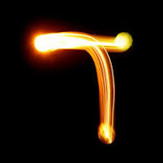

Хэй (ה) — пятая ступень
Мы прошли четыре ступени. Алеф — начало. Бет — дом. Гимел — щедрый дающий. Далет — дверь, порог, готовность принять. И вот, едва мы переступили этот порог, в темноте вспыхивает крошечная искра — маленькая Йуд, спрятанная внутри формы. Так появляется Хэй: не просто путь, а дыхание, движение, первый выдох, с которого рождается речь.
Это момент, когда абстрактная возможность начинает обретать очертания — ещё не твёрдая материя, но уже ощутимое присутствие, намёк на форму, которая вот‑вот проявится. Хэй и есть эта грань: пространство Далет получает импульс, и в нём начинает материализоваться смысл.
| Параметр | Значение |
|---|---|
| Порядковый номер | 5 |
| Гематрия | 5 |
| Имя | Хэй (ה) |
| Значение | Окно, выдох, откровение |
| Звук | [h] — лёгкий выдох |
| Форма | Далет (дверь) с Йуд (искрой) внутри |
| Связь с предыдущей буквой | Далет открывает проём, Хэй вдыхает в него жизнь |
Хэй — дыхание и откровение
Хэй несёт в себе природу откровения — не как громкой истины, обрушивающейся на нас целиком, а как тихого намёка, который можно услышать, только замедлившись и прислушавшись. Её звук — это выдох, начало речи. В книге Бытия мир творится через слово, и Хэй стоит на пороге между замыслом и его озвучиванием: она приоткрывает истину ровно настолько, насколько мы способны сейчас вместить.
Форма буквы усиливает этот смысл: Хэй — это как окно. Не дверь наружу, а проём, через который внутреннее становится видимым. В ней Далет (пространство) соединяется с Йуд (импульсом), и мир понемногу обретает черты: сначала едва уловимые, как силуэты за матовым стеклом, потом всё чётче.
Число 5 — переход от замысла к воплощению
Гематрия 5 — это число перехода, момент, когда потенциал оформляется, но ещё не застыл. Это мир в становлении, который только-только начинает отзываться на наш взгляд. Пятёрка как будто говорит: «Ещё не всё, но уже достаточно, чтобы сделать следующий шаг».
- Пять пальцев — готовность действовать, осязать, удерживать форму.
- Пятая ступень — не завершение, а порог к материальным образам.
- В грамматике Хэй часто служит маркером женского рода и окончаний — то есть связана с формой, вместилищем, принимающей стороной, готовой вместить это откровение.
От Далет к Хэй: как дверь становится окном
Далет и Хэй: открытость встречает дыхание. Далет — это готовность принять дар. Хэй — это первый вдох после того, как дверь открылась. Если Далет — порог, то Хэй — момент, когда ты делаешь шаг и чувствуешь, как воздух касается кожи: мир становится ощутимым. Это не просто вход — это начало взаимодействия с тем, что за порогом.
Хэй и имя Бога. Буква Хэй дважды входит в четырёхбуквенное имя Творца (יהוה) — и в традиции это усиливает её связь с присутствием и проявлением божественного в мире. Она как будто отвечает за ту часть, где невидимое становится видимым, а замысел — ощутимым.

«Автострада 60»: мы уже на дороге
И вот мы на автостраде — уже не в полной пустоте, а в движении по найденному пути. И сквозь ту самую «искру» в форме буквы Хэй мир понемногу обретает черты. Мы ещё не видим всей картины целиком, но уже различаем контуры — будто первые кадры фильма, где из темноты проступает пространство, появляются фигуры, угадываются лица.
Это и есть момент материализации: не готовый, застывший мир, а мир в становлении, который только-только начинает дышать и отзываться на наш взгляд. Хэй словно приоткрывает завесу: мы не просто смотрим на мир — мы начинаем его ощущать, замечать в нём движение, тепло, присутствие другого.
А ещё в этом — откровение. Не громкое, не ослепляющее, а тихое, как первый луч, что пробирается сквозь щель: оно не обрушивается на нас всей правдой сразу, а даёт ровно столько, сколько мы способны сейчас вместить. Хэй и есть это приоткрытие истины — не как завершённого знания, а как живого, дышащего намёка: мир начинает говорить с нами, и в самом этом звучании уже содержится ответ. Мы не видим ещё всех дорог впереди, но уже чувствуем направление, уже слышим голос пути — и этого достаточно, чтобы ехать дальше.